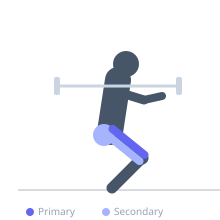
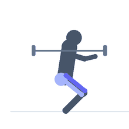

Exercise guide / Front Squat
Front Squat
The front squat places the barbell across the front deltoids and clavicles, requiring a markedly more upright torso than the back squat. This positioning shifts loading emphasis toward the quadriceps and demands significant thoracic extension and wrist mobility. It is a staple of Olympic weightlifting and an effective tool for quad-dominant lower body development.
Primary muscles
rectus femoris
vastus lateralis
vastus medialis
vastus intermedius
Secondary muscles
gluteus maximus
biceps femoris long head
Stabilizers
erector spinae
transverse abdominis
trapezius upper
Equipment
Standard Barbell
Power Rack (Squat Cage)
Optional
Weight Plates


Starting position
- Stand inside the rack with the bar set at collarbone height. Step under the bar and push your elbows forward and up until they are parallel to the floor, allowing the bar to rest across your front deltoids and clavicles. Your fingertips can rest on the bar with a loose grip or cross your arms in a clean grip. Stand tall, brace your core, and unrack the bar.
Setup
- Set the barbell on the rack at collarbone height. Use either a clean grip (elbows high, bar resting on fingertips) or a crossed-arm grip. Position feet shoulder-width apart with toes turned slightly outward.
Steps
- Step 1: Unrack the bar and take two steps back. Stand with feet shoulder-width apart, toes pointed 15–30° outward, elbows driven high.
- Step 2: Take a deep breath into your abdomen and brace your core firmly as though bracing for a punch.
- Step 3: Initiate the descent by pushing your knees out in line with your toes while simultaneously sitting your hips back and down. Keep the elbows high throughout.
- Step 4: Descend until your thighs are at least parallel to the floor or deeper if mobility allows. The torso should remain nearly vertical.
- Step 5: Drive through the full foot to extend your knees and hips back to the starting position. Exhale at the top.
Coaching cues
- Elbows up — if they drop, the bar rolls off
- Sit between your knees, not behind them
- Knees track over the pinky toe
Breathing
- Inhale and brace before descent. Hold breath through the sticking point. Exhale at the top of the rep.
Range of motion
- Aim to reach at least parallel (thighs horizontal) or deeper if mobility allows without lumbar rounding.
Tempo
- 3-1-1-0 (3 seconds down, 1 second pause at bottom, 1 second up, no pause at top)
Common mistakes
- Dropping the elbows during descent, causing the bar to roll forward off the shoulders
- Allowing the knees to cave inward (valgus collapse) during the ascent
- Rising onto the toes due to insufficient ankle dorsiflexion
- Excessive forward lean from poor thoracic mobility
Safety
- Develop adequate wrist and thoracic mobility before loading heavily
- Use safety bars in a rack in case of a failed rep — the bar can be dropped forward safely with bumper plates
- Heel elevation (small plates or wedges) can compensate for limited ankle dorsiflexion while mobility is being developed
Training
- strength: 1–5 reps
- hypertrophy: 6–10 reps
- endurance: 12–20 reps
- strength: 3–6 sets
- hypertrophy: 3–5 sets
- endurance: 2–4 sets
- Rest: {'strength': 240, 'hypertrophy': 90, 'endurance': 60}